DV-PRI-025 · Telas administrativas abrem pelo endereço para quem não tem nenhuma permissão de Administração
Um usuário cujo perfil só tem a tela **Centro de custo** consegue abrir, **digitando o endereço**, as telas de **edição** de usuário e de perfil, a de **configuração**, a de **Microservices**, a de **grupo de usuário** e os **relatórios** de usuário e de perfil (este último mostrando dados). As telas de **lista** correspondentes são negadas ("Seu perfil não possuí permissão!"). Não foi testado se essas telas gravam. A tela de Microservices (que tem módulo, versão e endereço de cada módulo do sistema) só é recusada para quem não está logado. **Risco:** a permissão do perfil vale para o menu e para a lista, mas não para a tela de edição; um usuário com acesso mínimo pode ver cadastros de usuários, perfis e a configuração do sistema e, se a gravação não conferir a permissão, alterar acessos.
Como reproduzir o erro, passo a passo
- Entrar no Principal com um usuário de teste cujo perfil só tem a tela Centro de custo.
- Na barra de endereços do navegador, digitar o caminho de cada tela (a partir do endereço do sistema): administracao/usuario_ed.aspx, administracao/perfil_ed.aspx, administracao/configuracao_ed.aspx, administracao/microservice_ed.aspx, administracao/grupo_usuario_ed.aspx, administracao/usuario_rel.aspx e administracao/perfil_rel.aspx.
- Para comparar, digitar também as listas (administracao/usuario_lst.aspx, perfil_lst.aspx, usuario_conta_lst.aspx): são negadas.
- Sem estar logado, digitar administracao/microservice_ed.aspx: é negado (sessão expirada).
Esperado
Todas as telas de Administração negam o acesso a quem não tem a função, com a mesma mensagem das listas (CT-PRI-061 a 068; RF-PRI-032).
Obtido
Sete telas de edição, configuração, Microservices e relatórios abriram; as listas foram negadas.
Evidência (captura da tela)
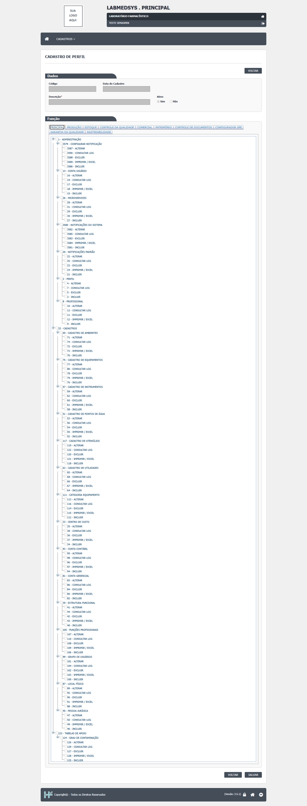
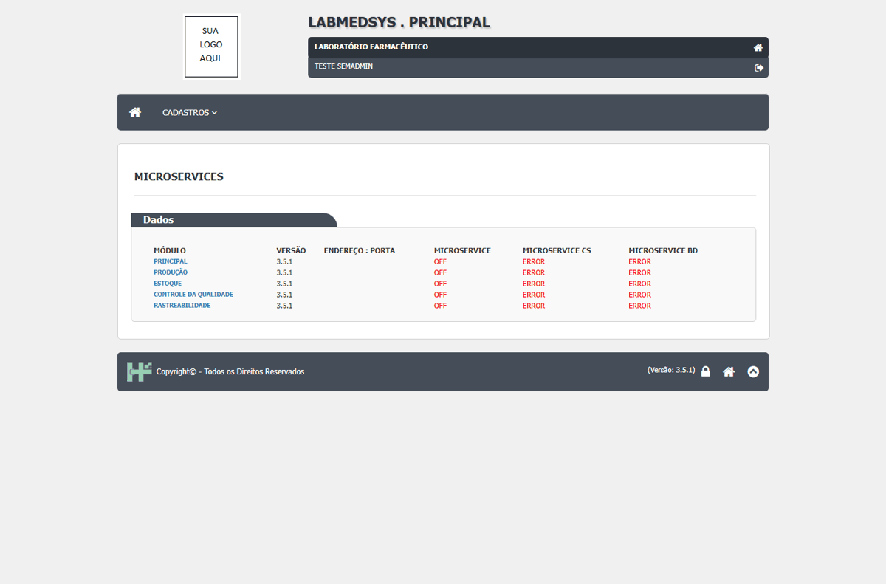
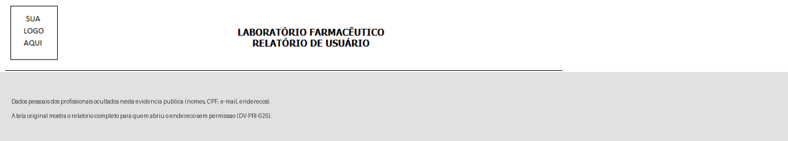
DV-PRI-033 · A troca de Grupo do profissional não aparece no histórico; a troca de Setor aparece sem o valor antigo
Troquei o **Grupo** (de `TESTE GRUPO R10` para `GRUPO 1`) e o **Setor** (para `PRODUÇÃO`) do profissional com justificativa. A tela reaberta mostra os dois novos valores, mas o histórico traz só uma linha **DIVISÃO** com valor antigo em branco e novo PRODUÇÃO. **A troca de grupo não foi registrada.** Para quem restringe acesso por grupo, mudar o grupo de alguém sem rastro permite dar ou tirar acesso sem deixar prova.
Como reproduzir o erro, passo a passo
- Abrir Administração › Profissional, editar um profissional TESTE.
- Trocar o Grupo e o Setor, escrever a justificativa e SALVAR.
- Reabrir: conferir os dois valores.
- Abrir Ver Log Alteração.
Esperado
Duas linhas no histórico (grupo e setor), cada uma com valor antigo, valor novo, quem, quando e a justificativa.
Obtido
Uma linha (DIVISÃO), sem valor antigo; nenhuma linha de grupo.
Evidência (captura da tela)
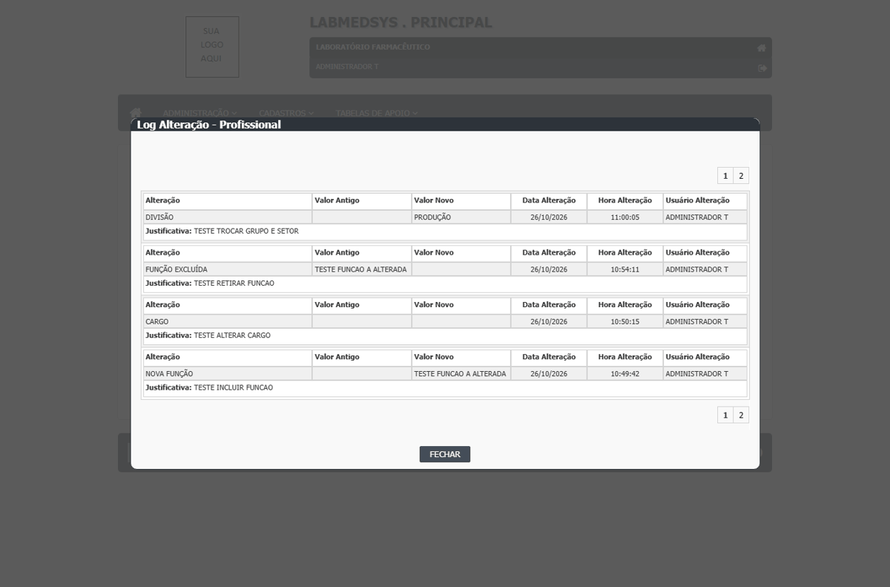
DV-PRI-004 · Histórico do Profissional grava a alteração do Cargo sem o valor antigo e o novo, e registra o DDI como alterado sem mudança
Ao alterar o **Cargo** de um profissional (com justificativa), o histórico registra o item **CARGO** com usuário, data, hora e justificativa, mas com **Valor Antigo e Valor Novo em branco**. Foi digitado ANALISTA TESTE e esse valor não aparece. Na mesma gravação, o histórico também registra o item **DDI** como alterado (de vazio para 55), sem o usuário ter mexido no campo. Quem audita não sabe o que o cargo passou a ser e vê uma alteração que não aconteceu.
Como reproduzir o erro, passo a passo
- Entrar no módulo Principal e abrir Administração › Profissional; pesquisar TESTE INCLUSAO e clicar no ícone de editar.
- No bloco Setor, em Cargo, digitar ANALISTA TESTE (deixar Setor em SELECIONE). Alterar também telefone e e-mail.
- Em Digite sua Justificativa, escrever TESTE ALTERACAO CT044 e clicar em SALVAR.
- Na lista, clicar no ícone LOG da linha e ler as duas páginas do histórico.
Esperado
Item CARGO com Valor Antigo (vazio) e Valor Novo "ANALISTA TESTE". Nenhum item para campos que o usuário não alterou.
Obtido
Item CARGO com Valor Antigo e Valor Novo em branco. Item DDI com Valor Antigo vazio e Valor Novo 55, sem alteração feita pelo usuário.
Evidência (captura da tela)
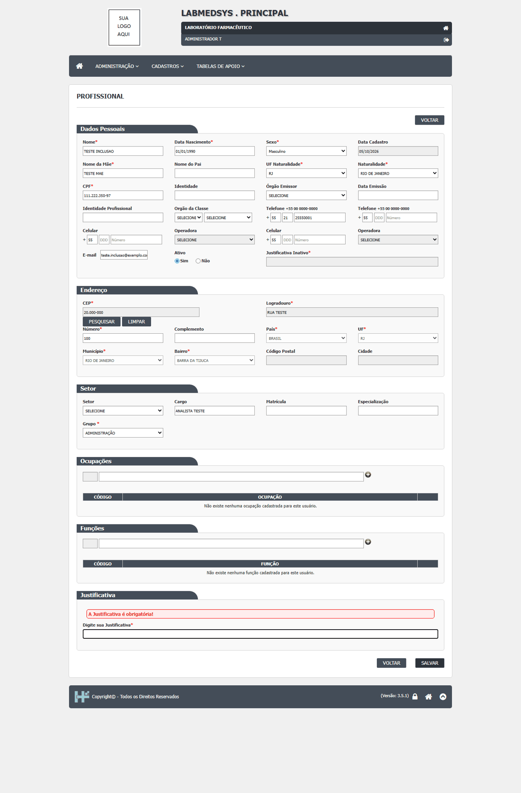
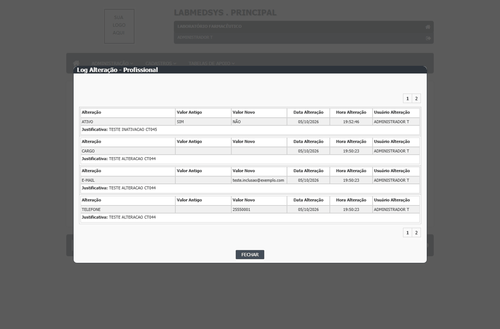
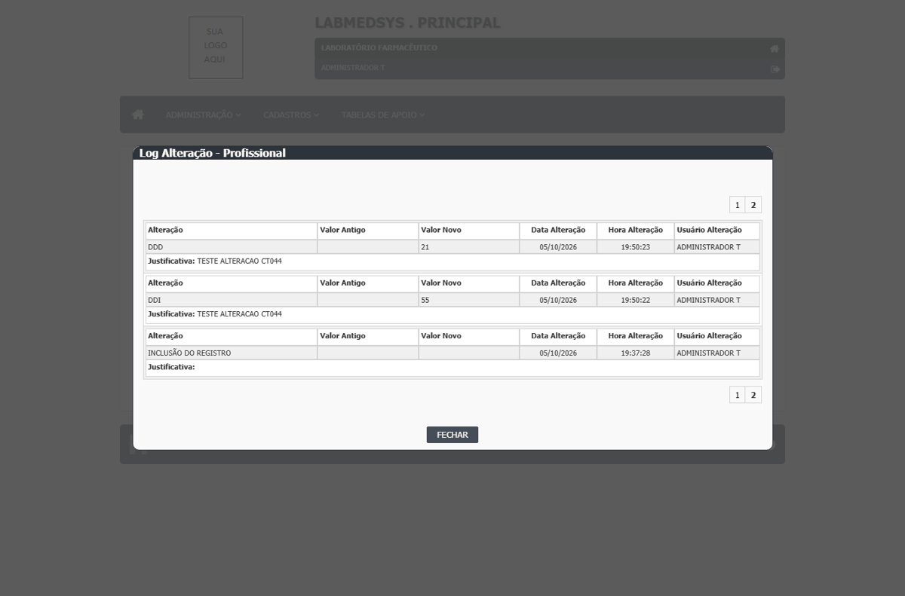
DV-PRI-006 · Profissional com conta de usuário e perfil é excluído sem aviso de dependência
O sistema excluiu o profissional **TESTE CADASTRO**, que tinha **conta de usuário** com perfil, sem avisar que havia uma conta ligada a ele. A regra RN-PRI-051 espera que a exclusão seja recusada, dizendo qual dependência impede, ou ao menos que o usuário seja avisado. Os registros criados por um profissional precisam continuar ligados a uma pessoa identificável. O caso de um profissional que **já criou registros** no sistema não foi reproduzido: esse usuário de teste nunca entrou no sistema.
Como reproduzir o erro, passo a passo
- Entrar no módulo Principal e abrir Administração › Profissional.
- Pesquisar TESTE CADASTRO (profissional que tem conta em Administração › Conta usuário, com perfil TESTECADASTRO) e clicar no ícone de excluir.
- Na tela Exclusão, preencher Justificativa TESTE EXCLUSAO COM HISTORICO CT048 e clicar em EXCLUIR; confirmar.
- Pesquisar TESTE CADASTRO de novo.
Esperado
Recusar a exclusão, dizendo que há uma conta de usuário e um perfil ligados ao profissional (ou exigir que a conta seja desativada antes), conforme RN-PRI-051.
Obtido
Exclusão realizada; a pesquisa por TESTE CADASTRO volta "A pesquisa não retornou nenhum resultado." Nenhum aviso sobre a conta.
Evidência (captura da tela)
DV-PRI-023 · Quem só tem a consulta de Usuário vê a tela de detalhe destravada: 38 de 51 campos editáveis
Um usuário cujo perfil só tem a **consulta** de Profissional vê, na lista, apenas o ícone "Consultar" (sem Novo, Editar ou Excluir). Mas ao abrir o detalhe de um usuário, **38 dos 51 campos continuam editáveis** e aparecem os botões **Adicionar Ocupação** e **Adicionar Função**; só o botão Salvar some. **Risco:** a tela dá a impressão de que o usuário pode alterar dados que não pode, e abre caminho para erro ou tentativa de burla. O envio forçado da gravação foi recusado pelo servidor (CT-PRI-070), mas pela validação técnica do ASP.NET e não por uma checagem de permissão.
Como reproduzir o erro, passo a passo
- Entrar com um usuário de teste cujo perfil só tem as telas Perfil e Profissional, sem nenhuma ação.
- Abrir Administração › Profissional, pesquisar e clicar no ícone Consultar de um registro.
- Tentar digitar em campos como Cargo e e-mail e conferir os botões da tela.
Esperado
Tela somente leitura: campos desabilitados e sem botões de adicionar ou salvar (CT-PRI-050; RN-PRI-043).
Obtido
38 de 51 campos editáveis e botões "Adicionar Ocupação" e "Adicionar Função" visíveis; só o Salvar não existe.
Evidência (captura da tela)
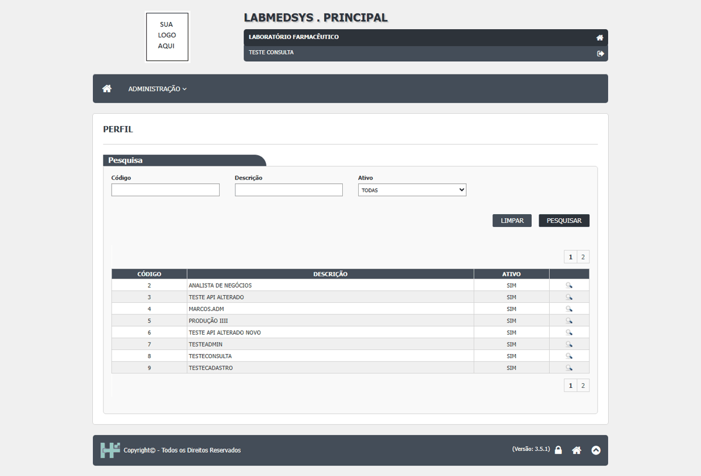
DV-PRI-038 · Cadastrar um profissional não gerou a notificação "NOVO PROFISSIONAL" para o destinatário configurado
O tipo de notificação "NOVO PROFISSIONAL" tem como destinatário o `ADMINISTRADOR T` e a notificação padrão 1 diz "Novo profissional foi cadastrado. Providenciar criação de login e configuração de perfil". Depois de cadastrar o profissional `TESTE ADM` (ID 55), **nenhuma notificação nova** apareceu em Administração › Notificações do sistema (a lista continuou só com a notificação 1, de 21/07/2026). A tela inicial também não tem aviso nem contador. **A confirmar:** se o evento depende de outra condição (por exemplo, e-mail ou outro usuário), o teste não a enxergou.
Como reproduzir o erro, passo a passo
- Em Configurar notificação, conferir que o tipo NOVO PROFISSIONAL tem o destinatário ADMINISTRADOR T.
- Em Profissional, incluir um profissional TESTE.
- Abrir Administração › Notificações do sistema, escolher Pendente leitura = TODOS e Pesquisar.
Esperado
Uma notificação nova "NOVO PROFISSIONAL" pendente para o destinatário, visível na lista e com contador na tela inicial.
Obtido
Nenhuma notificação nova.
Evidência (captura da tela)
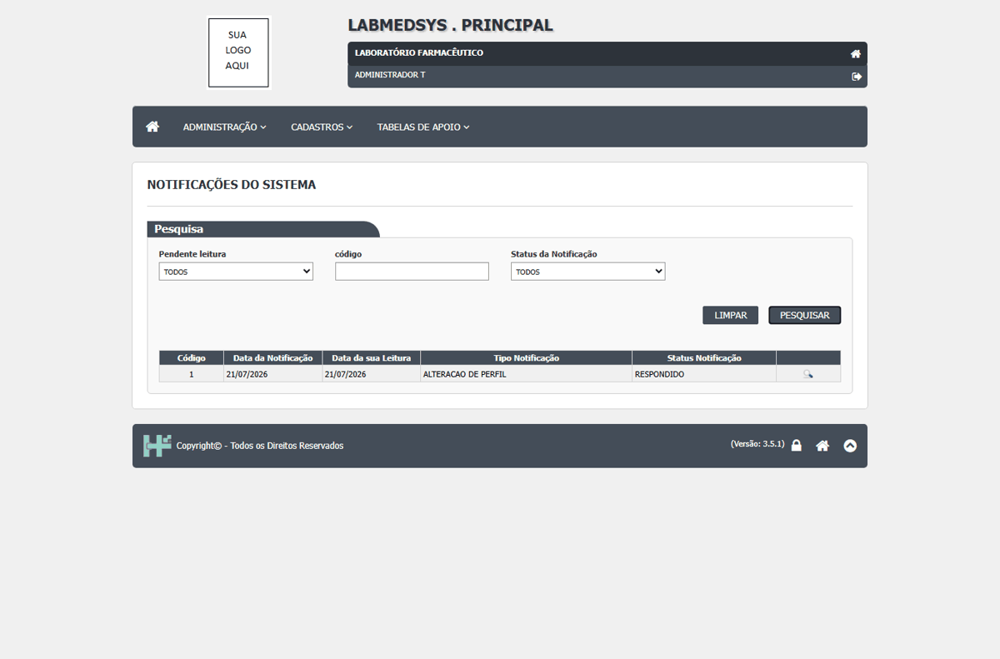
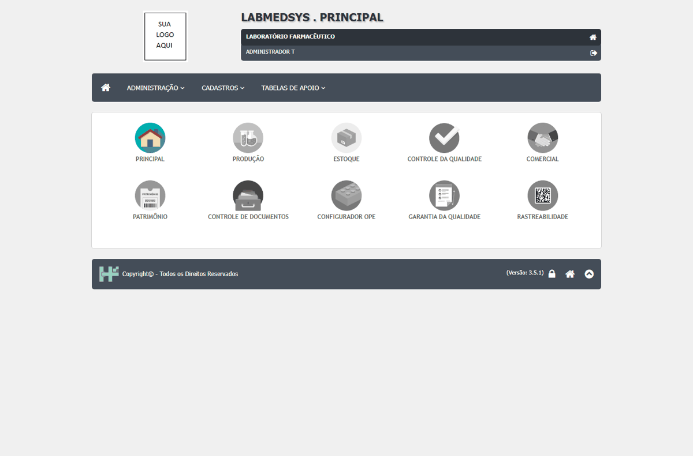
DV-PRI-049 · Profissional inativo não pode ser excluído: o campo de justificativa da exclusão vem desabilitado
Na tela de exclusão do profissional, o campo Justificativa é obrigatório. Para um profissional **ativo**, o campo aceita texto e a exclusão funciona. Para um profissional **inativo**, o campo vem cinza e desabilitado (não dá para digitar), e o botão EXCLUIR responde sempre "A justificativa da exclusão do usuário é obrigatória!". Quem foi inativado nunca pode ser excluído, e o jeito de contornar é reativar, excluir e perder o rastro do estado anterior.
Como reproduzir o erro, passo a passo
- Em Profissional, incluir TESTE EXCLUIR UM e inativá-lo com justificativa.
- Pesquisar o profissional e clicar no ícone Excluir.
- Tentar digitar a justificativa.
- Reativar o profissional, repetir os passos 2 e 3.
Esperado
Campo de justificativa habilitado também para o profissional inativo.
Obtido
Campo desabilitado e exclusão recusada.
Evidência (captura da tela)
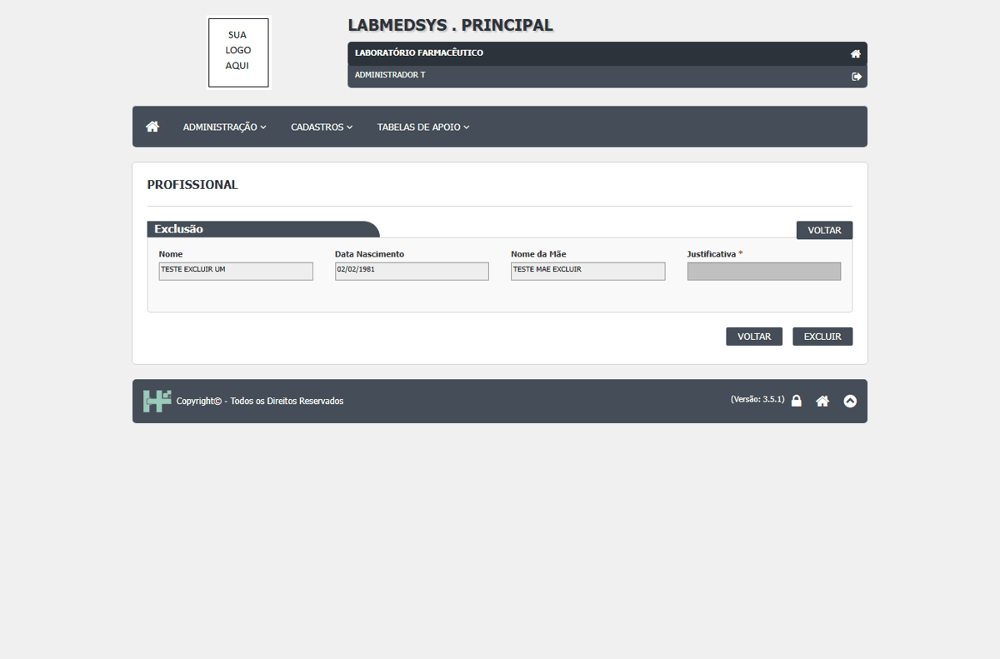
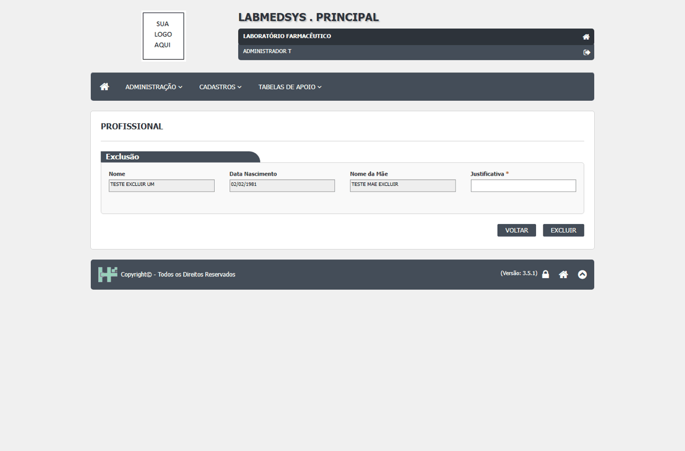
DV-PRI-032 · O nome do profissional perde os números sem aviso (TESTE ADM01 foi gravado como TESTE ADM)
Digitei o nome `TESTE ADM01` e o sistema gravou `TESTE ADM`, apagando os dígitos sem mensagem. É o mesmo comportamento do `_` no nome do perfil (DV-PRI-001). Pode ser regra (nome de pessoa sem número), mas o sistema não avisa nem recusa.
Como reproduzir o erro, passo a passo
- Abrir Administração › Profissional, clicar em Incluir.
- Nome TESTE ADM01 e os demais campos obrigatórios; SALVAR.
- Pesquisar o profissional na lista.
Esperado
Recusar números no nome com mensagem, ou gravar exatamente o que foi digitado.
Obtido
Gravado como TESTE ADM, sem aviso.
Evidência (captura da tela)
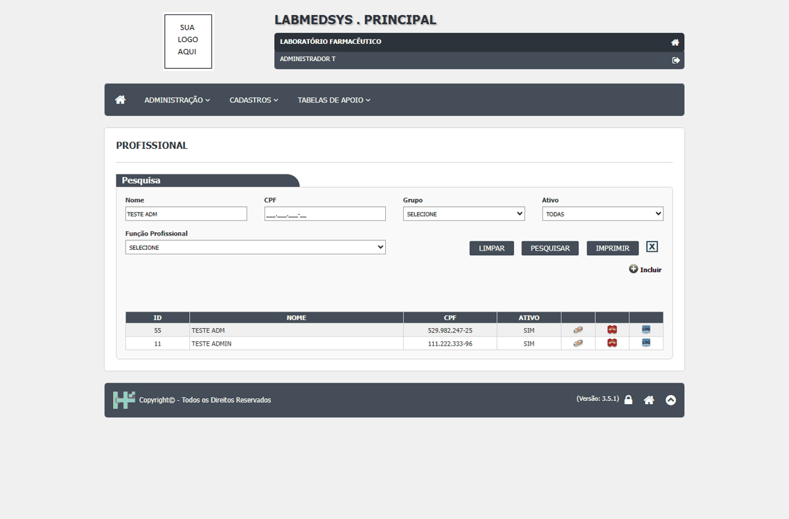
DV-PRI-051 · Endereço de edição com número inexistente abre uma ficha de profissional em branco, sem aviso
Digitando o endereço da edição de profissional com um número que não existe (`id=999999`), o sistema abre a ficha toda em branco, como um cadastro novo, sem dizer que o profissional não foi encontrado. Com `id=abc` aparece a página de erro técnica do ASP.NET (já registrada no DV-PRI-026).
Como reproduzir o erro, passo a passo
- Estando logado como administrador, abrir o endereço da tela de edição de profissional com id=999999.
Esperado
Mensagem "Profissional não encontrado" e volta à lista.
Obtido
Ficha em branco.
Evidência (captura da tela)
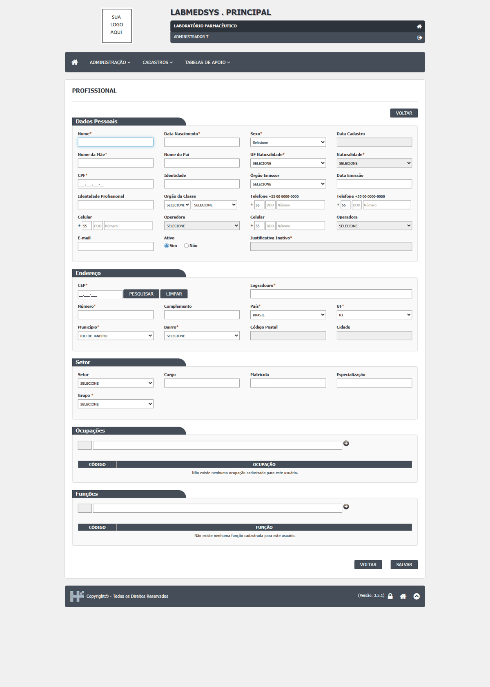
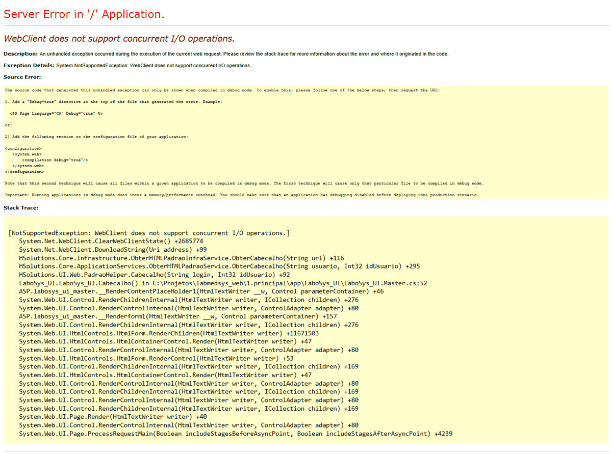